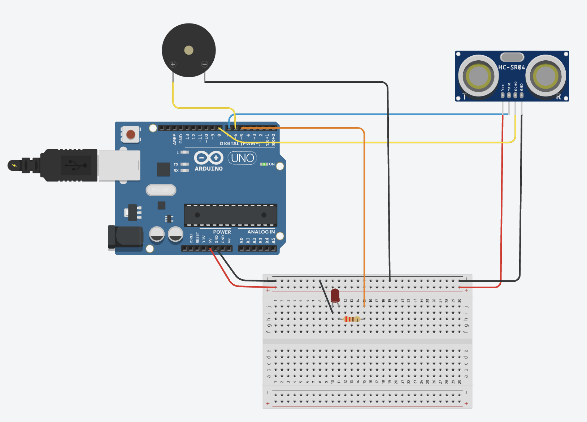
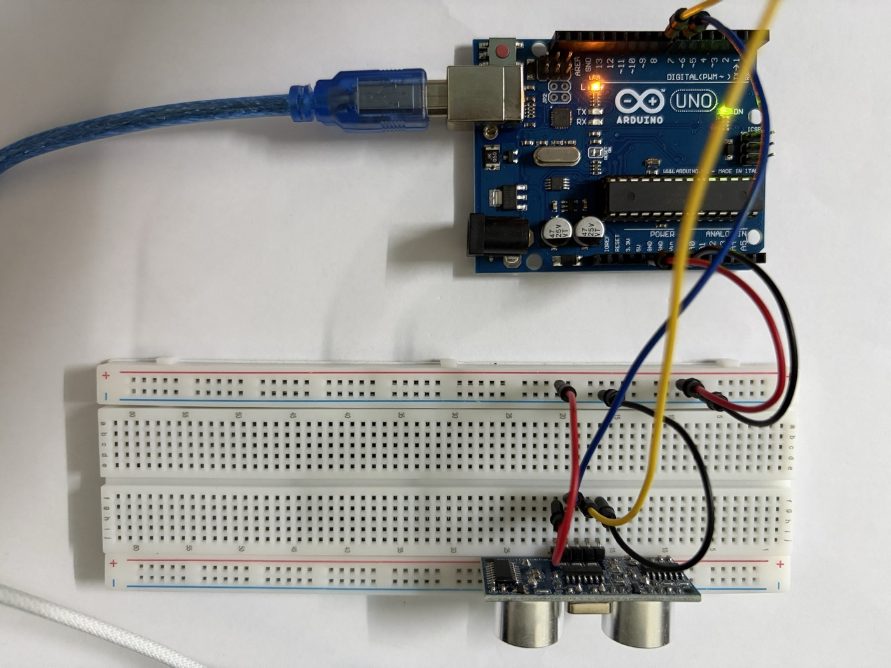

Lab 6 · Cảm biến siêu âm HC-SR04 / HC-SR05 – đo khoảng cách
Lab 6 · Cảm biến siêu âm HC-SR04 / HC-SR05 – đo khoảng cách
Đo khoảng cách bằng sóng siêu âm với Arduino Uno: phát xung
TRIG, đo độ rộng xungECHObằngpulseIn(), đổi thời gian ra cm. Sau đó lọc nhiễu bằng trung vị, làm đèn báo lùi xe 3 màu, và bù sai số nhiệt độ bằng DHT11. Đây là lab đầu tiên đọc một cảm biến bằng độ rộng xung thay vì mức điện áp.
Cảm biến siêu âm là gì
Module có hai “mắt” tròn bằng kim loại, nhưng đó không phải camera mà là hai đầu dò siêu âm (transducer):
T(transmitter) – loa phát sóng âm tần số 40 kHz, cao hơn tai người nghe được (≤ 20 kHz).R(receiver) – micro thu sóng phản xạ.
Nguyên lý giống con dơi và máy sonar: phát một chuỗi sóng âm, chờ sóng dội lại từ vật cản, đo thời gian đi và về rồi nhân với vận tốc âm thanh.
d = \frac{v_{\text{âm}} \times t}{2}
Chia 2 vì sóng đi tới vật rồi quay về, quãng đường là gấp đôi khoảng cách.
Một lần đo diễn ra thế nào
TRIG ___|‾‾‾‾|______________________________________ ← Arduino giữ HIGH 10 µs
10µs
Sóng _________|||||||||_____________________________ ← module tự phát 8 xung 40 kHz
ECHO ___________________|‾‾‾‾‾‾‾‾‾‾‾‾‾‾‾‾‾|_________ ← HIGH suốt thời gian chờ sóng về
<------ t ------>- Arduino kéo
TRIGlênHIGHít nhất 10 µs rồi hạ xuống. - Chip trên module phát 8 chu kỳ sóng 40 kHz (khoảng 200 µs) qua đầu
T. - Ngay sau khi phát xong, module kéo
ECHOlênHIGH. - Khi đầu
Rnhận được sóng phản xạ,ECHOhạ xuốngLOW. - Độ rộng xung
ECHOchính là thời giantđi và về.
Arduino không cần biết gì về 40 kHz, chỉ cần tạo xung TRIG và đo xung ECHO.
Đổi thời gian ra khoảng cách
Ở 20 °C, âm thanh đi được 343 m/s = 0,0343 cm/µs. Vậy:
d\,[\text{cm}] = \frac{t\,[\mu s] \times 0{,}0343}{2} = \frac{t}{58{,}3}
| Khoảng cách | Thời gian ECHO |
|---|---|
| 2 cm (gần nhất đo được) | ~117 µs |
| 10 cm | ~583 µs |
| 1 m | ~5,8 ms |
| 4 m (xa nhất HC-SR04) | ~23 ms |
| Không có vật cản | ~38 ms rồi tự hạ (tùy module) |
Nhiều tài liệu viết distance = duration / 58 hoặc duration * 0.034 / 2, đều là cùng một công thức làm tròn.
HC-SR04 và HC-SR05
Hai module dùng chung nguyên lý và chung code, khác nhau chủ yếu ở số chân và tầm đo:
| Thông số | HC-SR04 | HC-SR05 |
|---|---|---|
| Số chân | 4: VCC · Trig · Echo · GND |
5: VCC · Trig · Echo · OUT · GND |
| Điện áp | 5 V DC | 5 V DC |
| Dòng tiêu thụ | ~15 mA | ~15 mA (tùy bản dưới 10 mA) |
| Tần số sóng | 40 kHz | 40 kHz |
| Tầm đo | 2–400 cm | 2–450 cm |
| Độ phân giải công bố | ~3 mm | ~2 mm |
| Góc đo | ~15° | ~15° |
Xung TRIG |
≥ 10 µs | ≥ 10 µs |
| Chu kỳ đo tối thiểu | 60 ms | 60 ms |
Chân OUT của HC-SR05: để trống. Tài liệu của các nhà sản xuất ghi không thống nhất (có bản ghi là ngõ ra công tắc, có bản bắt chước chân chọn chế độ 1 dây của SRF05), còn cách dùng phổ biến với Arduino chỉ cần Trig và Echo. Nối HC-SR05 y như HC-SR04, bỏ qua OUT.
Con số “3 mm” chỉ là độ phân giải lý thuyết. Trên mạch thật, sai số thường cỡ ±1 cm ở khoảng cách gần, và tăng dần khi đo xa.
Bản 3,3 V. HC-SR04 gốc cần 5 V và chân ECHO ra mức 5 V. Nếu dùng ESP32/ESP8266 (chân chịu 3,3 V) thì phải hạ áp ECHO bằng cầu chia áp (ví dụ 1 kΩ + 2 kΩ), hoặc mua bản HC-SR04P chạy được 3–5,5 V.

HY-SRF05): đầu phát T bên trái, đầu thu R bên phải, thạch anh Y1 ở giữa phía trên, 5 chân Vcc · Trig · Echo · OUT · GND hàn sẵn header bẻ góc 90°Module trong kit là HC-SR05, trên mạch in chữ HY-SRF05 (hãng HY, đặt tên theo cảm biến SRF05 mà nó bắt chước). Nhìn mặt trước:
- Hai đầu dò:
T(phát) bên trái,R(thu) bên phải, giống hệt HC-SR04. - Thạch anh
Y1(khối kim loại bạc ở giữa phía trên): tạo xung nhịp cho chip đo thời gian ở mặt sau. - 5 chân từ trái sang phải:
Vcc·Trig·Echo·OUT·GND. So với HC-SR04 chỉ thêmOUTở giữaEchovàGND, nên đừng cắm theo thói quen 4 chân: chân thứ tư làOUT,GNDlà chân thứ năm. - Header bẻ góc 90°: chân chĩa ra phía sau, song song với mặt mạch. Cắm lên breadboard thì module đứng thẳng, mặt hai “mắt” nhìn ngang, tiện để đo vật phía trước.
Giới hạn của cảm biến siêu âm
Cảm biến đo được khi sóng dội thẳng về đầu R. Những trường hợp đo sai hoặc không đo được:
| Tình huống | Vì sao |
|---|---|
| Vật nghiêng so với cảm biến (> ~15°) | Sóng phản xạ đi chệch hướng, không về đầu R → đọc ra xa hơn thật hoặc timeout |
| Vật mềm, xốp: vải, mút, rèm, áo len | Hấp thụ sóng âm, phản xạ yếu |
| Vật nhỏ, mảnh: bút, cây que, dây | Bề mặt phản xạ quá nhỏ |
| Vật gần hơn 2 cm | Sóng về trước khi module kịp chuyển sang chế độ nghe |
| Hai cảm biến siêu âm chạy cùng lúc | Cảm biến này nhận nhầm sóng của cảm biến kia — đo lần lượt, không đo song song |
| Đo liên tục quá nhanh (< 60 ms) | Sóng dội từ lần đo trước (vật xa, phản xạ nhiều lần) về muộn, bị tính cho lần đo sau |
Ngược lại, siêu âm không phụ thuộc màu sắc và ánh sáng: vật đen, vật trong suốt (kính) hay phòng tối đều đo được, điều mà cảm biến hồng ngoại hay camera làm không tốt.
Linh kiện và chân
| Linh kiện | Số lượng | Ghi chú |
|---|---|---|
| HC-SR04 hoặc HC-SR05 | 1 | |
| LED đỏ + điện trở 220 Ω | 1 bộ | Dùng cho Test 3 |
| Buzzer (còi) | 1 | Dùng cho Test 3. Trong Tinkercad là Piezo |
| Module DHT11 | 1 | Dùng cho Test 4, xem Lab 3 |
| LCD 1602 I²C | 1 | Dùng cho Test 4, xem Lab 2 |
| Breadboard, dây đực – đực, dây đực – cái |
Nối dây:
| Chân cảm biến | Nối vào Uno |
|---|---|
VCC |
5V |
Trig |
D7 |
Echo |
D8 |
GND |
GND |
OUT (chỉ HC-SR05) |
Để trống |
Có thể cắm module thẳng lên breadboard (chân hướng xuống, mặt “mắt” quay ra ngoài mép), hoặc dùng dây đực – cái dạng cáp dẹt trong kit chụp vào header của module để xoay cảm biến tự do. Đặt cảm biến sao cho không có gì chắn trước mặt trong khoảng 30 cm đầu: dây cắm, mép bàn hay thành breadboard nằm trong vùng 15° đều có thể bị đo nhầm.
Trig/Echo không cần chân PWM hay chân ngắt, chân digital nào cũng được. D7/D8 được chọn để chừa D2 cho DHT11 (giống Lab 3), D5/D6 cho LED và buzzer, A4/A5 cho LCD.
Code
Test 1 – đo khoảng cách
#define TRIG_PIN 7
#define ECHO_PIN 8
#define TIMEOUT_US 30000UL // 30 ms ≈ 5 m đi và về, quá mức này coi như không có vật
void setup() {
Serial.begin(9600);
pinMode(TRIG_PIN, OUTPUT);
pinMode(ECHO_PIN, INPUT);
digitalWrite(TRIG_PIN, LOW);
}
float doKhoangCach() {
// xung TRIG 10 µs, có 2 µs LOW trước để xung sạch
digitalWrite(TRIG_PIN, LOW);
delayMicroseconds(2);
digitalWrite(TRIG_PIN, HIGH);
delayMicroseconds(10);
digitalWrite(TRIG_PIN, LOW);
unsigned long t = pulseIn(ECHO_PIN, HIGH, TIMEOUT_US); // µs, 0 nếu timeout
if (t == 0) return -1; // không đo được
return t * 0.0343 / 2.0; // cm
}
void loop() {
float d = doKhoangCach();
if (d < 0) {
Serial.println("Ngoai tam do");
} else {
Serial.print("d = ");
Serial.print(d, 1);
Serial.println(" cm");
}
delay(100);
}Giải thích:
pulseIn(ECHO_PIN, HIGH, timeout)chờ chânECHOlênHIGH, bấm giờ, chờ xuốngLOW, rồi trả về số µs. Đây là hàm chặn (blocking): trong lúc chờ,loop()không làm được gì khác.- Luôn truyền
timeout. Mặc địnhpulseIn()chờ tới 1 giây. Khi không có vật cản, một số module HC-SR04 bản rẻ giữECHOởHIGHrất lâu, chương trình sẽ đứng gần 1 s mỗi lần đo. Với 30 ms, hàm trả 0 nếu quá tầm và code inNgoai tam do. unsigned longchot: thời gian có thể tới vài chục nghìn µs, vượt giới hạn 32767 củainttrên Uno.delay(100)giữa hai lần đo, lớn hơn 60 ms theo khuyến cáo để sóng dội của lần trước tắt hẳn.
Cách kiểm tra:
- Đặt cảm biến hướng lên trần nhà hoặc ra phòng trống: Serial in khoảng cách tới trần/tường, hoặc
Ngoai tam donếu quá 4 m. - Đưa bàn tay (hoặc tốt hơn là một quyển sách, mặt phẳng song song với cảm biến) lại gần dần: số giảm theo.
- Dùng thước kẻ đo thật ở 10 cm, 20 cm, 50 cm và so với số trên Serial. Ghi lại sai lệch.
- Đưa sách sát dưới 2 cm: số nhảy lung tung hoặc lớn bất thường, vì đã dưới tầm đo tối thiểu.
- Nghiêng quyển sách khoảng 45°: số nhảy hoặc báo ngoài tầm, vì sóng dội đi hướng khác.
Test 2 – lọc nhiễu bằng trung vị
Đo thật sẽ thấy thỉnh thoảng có một số vọt hẳn ra (ví dụ 23, 23, 24, 187, 23…) do sóng dội lạc hoặc một lần timeout. Lấy trung bình thì một số vọt cũng kéo lệch kết quả. Lấy trung vị (median) của 5 lần đo, tức sắp xếp rồi chọn số ở giữa, thì vài số vọt bị loại bỏ hoàn toàn.
#define TRIG_PIN 7
#define ECHO_PIN 8
#define TIMEOUT_US 30000UL
#define SO_LAN 5
void setup() {
Serial.begin(9600);
pinMode(TRIG_PIN, OUTPUT);
pinMode(ECHO_PIN, INPUT);
}
float doKhoangCach() {
digitalWrite(TRIG_PIN, LOW);
delayMicroseconds(2);
digitalWrite(TRIG_PIN, HIGH);
delayMicroseconds(10);
digitalWrite(TRIG_PIN, LOW);
unsigned long t = pulseIn(ECHO_PIN, HIGH, TIMEOUT_US);
if (t == 0) return 999; // timeout → coi là rất xa, để trung vị đẩy ra cuối
return t * 0.0343 / 2.0;
}
float doTrungVi() {
float a[SO_LAN];
for (int i = 0; i < SO_LAN; i++) {
a[i] = doKhoangCach();
delay(60);
}
// sắp xếp chèn (insertion sort), mảng nhỏ nên đủ nhanh
for (int i = 1; i < SO_LAN; i++) {
float x = a[i];
int j = i - 1;
while (j >= 0 && a[j] > x) {
a[j + 1] = a[j];
j--;
}
a[j + 1] = x;
}
return a[SO_LAN / 2]; // phần tử giữa
}
void loop() {
float tho = doKhoangCach();
delay(60);
float loc = doTrungVi();
// Serial Plotter: 2 đường "tho" và "loc"
Serial.print("tho:");
Serial.print(tho > 500 ? 0 : tho);
Serial.print(" loc:");
Serial.println(loc > 500 ? 0 : loc);
}Mở Tools → Serial Plotter (9600 baud). Định dạng ten:giatri giúp Plotter đặt tên cho từng đường.
Cách kiểm tra:
- Để cảm biến nhìn vào một bức tường cố định: đường
thothỉnh thoảng có gai nhọn, đườnglocgần như phẳng. - Đưa tay qua lại nhanh:
locphản ứng chậm hơnthomột chút, vì mỗi giá trị lọc mất 5 × 60 ms = 0,3 s. Đây là cái giá của bộ lọc: càng nhiều lần đo thì càng mượt nhưng càng trễ.
Test 3 – báo vật cản bằng LED và buzzer
Mạch gốc của bài này là một sơ đồ Fritzing cho Raspberry Pi: HC-SR04, một LED đỏ, một điện trở và một buzzer, chân Echo đi qua cầu chia áp R1 220 Ω + R2 330 Ω. Dưới đây là bản chuyển sang Arduino Uno để dựng trên Tinkercad.
Khác gì so với bản Raspberry Pi:
| Raspberry Pi (mạch gốc) | Arduino Uno (lab này) | |
|---|---|---|
| Mức logic chân GPIO | 3,3 V, không chịu được 5 V | 5 V |
Chân Echo |
Phải qua cầu chia áp 220 Ω / 330 Ω: 5 \times \frac{330}{220+330} = 3\,\text{V} | Nối thẳng vào D8, bỏ R1 và R2 |
VCC cảm biến |
Chân 5 V của header GPIO | 5V của Uno |
| Báo động | LED + điện trở + buzzer nối tiếp trên một chân GPIO | Mỗi thứ một chân riêng: LED D5, buzzer D6 |
| Code | Python (RPi.GPIO, time.time()) |
C++ (pulseIn()) |
Tách LED và buzzer ra hai chân vì mắc nối tiếp thì 5 V phải chia cho cả LED, điện trở lẫn buzzer, cả hai đều yếu. Tách ra thì LED sáng rõ, buzzer kêu to, và sửa code điều khiển riêng từng thứ được (ví dụ chỉ nháy LED, không kêu).
Nối dây:
| Từ | Đến |
|---|---|
Uno 5V / GND |
Thanh + / − breadboard |
HC-SR04 Vcc / Gnd |
Thanh + / − |
HC-SR04 Trig |
D7 |
HC-SR04 Echo |
D8 (trực tiếp, không điện trở) |
| LED đỏ | D5 → điện trở 220 Ω → chân dài (anode); chân ngắn (cathode) → thanh − |
| Buzzer | Chân + (chân dài) → D6; chân − → thanh − |
#define TRIG_PIN 7
#define ECHO_PIN 8
#define LED_PIN 5 // LED đỏ (qua điện trở 220 Ω)
#define BUZZER_PIN 6 // piezo
#define TIMEOUT_US 30000UL
#define CANH_BAO 50 // < 50 cm: bắt đầu báo
#define SAT 10 // < 10 cm: báo liên tục
unsigned long lanBeepTruoc = 0;
bool dangKeu = false;
void setup() {
Serial.begin(9600);
pinMode(TRIG_PIN, OUTPUT);
pinMode(ECHO_PIN, INPUT);
pinMode(LED_PIN, OUTPUT);
pinMode(BUZZER_PIN, OUTPUT);
}
float doKhoangCach() {
digitalWrite(TRIG_PIN, LOW);
delayMicroseconds(2);
digitalWrite(TRIG_PIN, HIGH);
delayMicroseconds(10);
digitalWrite(TRIG_PIN, LOW);
unsigned long t = pulseIn(ECHO_PIN, HIGH, TIMEOUT_US);
if (t == 0) return 999;
return t * 0.0343 / 2.0;
}
// bật/tắt LED và buzzer cùng lúc
void baoDong(bool bat) {
digitalWrite(LED_PIN, bat);
if (bat) tone(BUZZER_PIN, 2000); // 2 kHz
else noTone(BUZZER_PIN);
}
void loop() {
float d = doKhoangCach();
if (d >= CANH_BAO) {
dangKeu = false; // xa: tắt hết
baoDong(false);
} else if (d < SAT) {
dangKeu = true; // quá sát: LED sáng đứng, còi kêu liên tục
baoDong(true);
} else {
// 10 cm → nháy/bíp mỗi 80 ms, 50 cm → mỗi 500 ms
unsigned long chuKy = map((long)d, SAT, CANH_BAO, 80, 500);
if (millis() - lanBeepTruoc >= chuKy) {
lanBeepTruoc = millis();
dangKeu = !dangKeu;
baoDong(dangKeu);
}
}
Serial.print("d = ");
Serial.print(d, 1);
Serial.println(" cm");
delay(60);
}Giải thích:
tone(BUZZER_PIN, 2000)phát sóng vuông 2 kHz, dùng được cho cả buzzer thụ động (piezo, cần tần số mới kêu, chính là Piezo trong Tinkercad) lẫn buzzer chủ động (có mạch dao động bên trong, chỉ cần cấpHIGH). Nếu kit là buzzer chủ động thì thaytone()/noTone()bằngdigitalWrite(BUZZER_PIN, HIGH/LOW)cũng được.- LED và buzzer bật tắt cùng nhau trong hàm
baoDong():digitalWrite(LED_PIN, bat)cho chânD5ra 5 V (LED sáng) hoặc 0 V (LED tắt), cùng lúc vớitone()/noTone()của buzzer. Vì vậy LED nháy đúng nhịp tiếng bíp. - Bíp bằng
millis()chứ không dùngdelay(): nếudelay(chuKy)thì trong lúc chờ Arduino không đo, vật lại gần mà còi vẫn kêu chậm. Vớimillis(), mỗi vòngloop()vẫn đo, chỉ đổi trạng thái khi đủ thời gian. Cùng kỹ thuật với nháy LED không chặn ở Lab 1. map((long)d, SAT, CANH_BAO, 80, 500):map()chỉ làm việc với số nguyên nên ép kiểud. Càng gần thì chu kỳ càng ngắn, bíp càng nhanh, đúng kiểu cảm biến lùi xe.tone()dùng Timer2, nên sẽ làm mất PWM ở chânD3vàD11. Lab này không dùng hai chân đó.
Cách kiểm tra:
| Khoảng cách | LED | Buzzer |
|---|---|---|
| ≥ 50 cm | tắt | im |
| 10–50 cm | nháy, càng gần càng nhanh | bíp cùng nhịp |
| < 10 cm | sáng đứng | kêu liên tục |
Test 4 – bù nhiệt độ bằng DHT11, hiển thị LCD
Vận tốc âm thanh phụ thuộc nhiệt độ không khí:
v \approx 331{,}3 + 0{,}606 \times T \quad [\text{m/s}],\ T \text{ tính bằng °C}
| Nhiệt độ | Vận tốc âm | Đo vật thật ở 2 m, code dùng 343 m/s sẽ ra |
|---|---|---|
| 10 °C | 337,4 m/s | 203,3 cm |
| 20 °C | 343,4 m/s | 199,8 cm |
| 30 °C (phòng ở Việt Nam) | 349,5 m/s | 196,3 cm |
| 35 °C | 352,5 m/s | 194,6 cm |
Phòng 30 °C đã lệch gần 2 %, khoảng 4 cm ở 2 m. Ghép DHT11 của Lab 3 để đọc nhiệt độ thật và tính lại vận tốc. Nối thêm:
| Linh kiện | Nối vào |
|---|---|
DHT11 out |
D2 |
DHT11 + / − |
5V / GND |
LCD I²C SDA / SCL |
A4 / A5 |
LCD I²C VCC / GND |
5V / GND |
#include <Wire.h>
#include <LiquidCrystal_I2C.h>
#include <DHT.h>
#define TRIG_PIN 7
#define ECHO_PIN 8
#define DHTPIN 2
#define DHTTYPE DHT11
#define TIMEOUT_US 30000UL
LiquidCrystal_I2C lcd(0x27, 16, 2);
DHT dht(DHTPIN, DHTTYPE);
float nhietDo = 25.0; // giá trị mặc định nếu DHT11 lỗi
unsigned long lanDocDhtTruoc = 0;
void setup() {
pinMode(TRIG_PIN, OUTPUT);
pinMode(ECHO_PIN, INPUT);
dht.begin();
lcd.init();
lcd.backlight();
}
unsigned long doThoiGian() {
digitalWrite(TRIG_PIN, LOW);
delayMicroseconds(2);
digitalWrite(TRIG_PIN, HIGH);
delayMicroseconds(10);
digitalWrite(TRIG_PIN, LOW);
return pulseIn(ECHO_PIN, HIGH, TIMEOUT_US);
}
void loop() {
// DHT11 chỉ đọc được mỗi ~1–2 s, nhiệt độ cũng thay đổi chậm
if (millis() - lanDocDhtTruoc >= 2000) {
lanDocDhtTruoc = millis();
float t = dht.readTemperature();
if (!isnan(t)) nhietDo = t;
}
float v = 331.3 + 0.606 * nhietDo; // m/s
float cmMoiUs = v / 10000.0; // m/s → cm/µs
unsigned long t = doThoiGian();
lcd.setCursor(0, 0);
if (t == 0) {
lcd.print("d: ngoai tam ");
} else {
float dBu = t * cmMoiUs / 2.0; // có bù nhiệt
float d20 = t * 0.0343 / 2.0; // giả sử 20 °C
lcd.print("d:");
lcd.print(dBu, 1);
lcd.print(" (");
lcd.print(d20, 1);
lcd.print(") ");
}
lcd.setCursor(0, 1);
lcd.print("T:");
lcd.print(nhietDo, 0);
lcd.print((char)223); // ký tự ° trong ROM HD44780
lcd.print("C v:");
lcd.print(v, 0);
lcd.print("m/s ");
delay(100);
}Dòng 1 hiện khoảng cách có bù nhiệt, trong ngoặc là số không bù (giả sử 20 °C) để so sánh. Dòng 2 hiện nhiệt độ và vận tốc âm đang dùng.
Cách kiểm tra:
- Đặt cảm biến cách tường đúng 1 m (đo bằng thước dây). Số có bù phải gần 100 cm hơn số trong ngoặc. Ở phòng 30 °C, hai số chênh nhau khoảng 2 cm.
- Ở khoảng cách gần (10–20 cm), hai số gần như bằng nhau: sai số nhiệt tỉ lệ với khoảng cách, nên chỉ đáng kể khi đo xa.
- Độ ẩm cũng ảnh hưởng vận tốc âm nhưng rất ít (dưới 0,5 %), bỏ qua được.
Mở rộng: thư viện NewPing
Thư viện NewPing (cài qua Library Manager) gói sẵn phần phát xung, timeout và lọc trung vị:
#include <NewPing.h>
NewPing sonar(7, 8, 400); // TRIG, ECHO, khoảng cách tối đa (cm)
void setup() { Serial.begin(9600); }
void loop() {
unsigned int cm = sonar.convert_cm(sonar.ping_median(5)); // trung vị 5 lần, 0 = ngoài tầm
Serial.println(cm);
delay(100);
}NewPing cũng hỗ trợ chế độ 1 chân (nối TRIG và ECHO chung một chân Arduino) để tiết kiệm chân, và đo không chặn bằng ngắt timer. Lab vẫn viết tay ở các Test trên để hiểu rõ TRIG/ECHO hoạt động thế nào.
Ứng dụng của cảm biến siêu âm
| Lĩnh vực | Ví dụ | Cảm biến làm gì |
|---|---|---|
| Ô tô | Cảm biến lùi xe, hỗ trợ đỗ xe | Đo khoảng cách tới xe/tường phía sau, báo tít nhanh dần (chính là Test 3) |
| Robot | Robot tránh vật cản | Đo phía trước, gần hơn ngưỡng thì rẽ |
| Đo mức | Bồn nước, thùng rác thông minh | Gắn trên nắp hướng xuống, khoảng cách tới mặt nước/rác cho biết mức đầy |
| Bãi đỗ xe | Đèn báo chỗ trống trên trần | Có xe đỗ thì khoảng cách giảm đột ngột → đổi đèn đỏ |
| Đếm người | Cửa ra vào | Khoảng cách tới cửa đối diện tụt xuống khi có người đi qua |
| Y tế / tiện ích | Máy rửa tay, thùng rác tự mở nắp | Đưa tay lại gần thì kích hoạt |
Trong hệ IoT
HC-SR04 là ví dụ cho kiểu cảm biến đo thời gian (time-of-flight) ở tầng thiết bị: tín hiệu là độ rộng xung, không qua ADC như quang trở. Vài hướng ghép:
- HC-SR04 + servo (Lab 4): gắn cảm biến lên cánh tay servo, quét 0–180° và in cặp (góc, khoảng cách) để vẽ “radar” trên máy tính.
- Đo mức nước bồn + ESP32: mỗi 10 phút gửi mức nước lên cloud, cảnh báo khi bồn sắp cạn. Nhớ hạ áp chân
ECHOvề 3,3 V. - Thùng rác thông minh: một HC-SR04 trên nắp đo mức đầy, một cái phía trước phát hiện tay để servo mở nắp. Nhớ đo lần lượt hai cảm biến, không phát cùng lúc.
Mô phỏng
Tinkercad Circuits có sẵn Ultrasonic Distance Sensor (4-pin), chính là HC-SR04 (tìm ultrasonic trong ô linh kiện). Không có HC-SR05, nhưng code giống hệt nên dùng bản 4 chân để mô phỏng.
- Kéo Arduino Uno R3, Breadboard small và Ultrasonic Distance Sensor (4-pin) vào.
- Nối
VCC→5V,TRIG→D7,ECHO→D8,GND→GND. - Dán code Test 1, bấm Start Simulation, mở Serial Monitor.
- Bấm vào cảm biến lúc đang mô phỏng sẽ hiện một vùng hình quạt và một chấm tròn (vật cản ảo). Kéo chấm lại gần hoặc ra xa thì số trên Serial thay đổi theo. Kéo chấm ra ngoài vùng quạt thì code in
Ngoai tam do.
Dựng mạch Test 3 trên Tinkercad
Bản Arduino của mạch Fritzing (Raspberry Pi) ở Test 3, gồm cảm biến, LED và buzzer.
- Kéo vào: Arduino Uno R3, Breadboard small, Ultrasonic Distance Sensor (4-pin), LED (đỏ), Resistor (đổi thành 220 Ω) và Piezo.
- Nguồn:
5Vcủa Uno (dây đỏ) → thanh+phía trên breadboard;GND(dây đen) → thanh−phía trên. - Cảm biến (đặt ngoài breadboard, bên phải):
VCC→ thanh+(dây đỏ)GND→ thanh−(dây đen)TRIG→D7của Uno (dây xanh dương)ECHO→D8của Uno (dây vàng) — không cần R1/R2 như bản Raspberry Pi
- Piezo (đặt ngoài breadboard): chân
+→D6của Uno, chân−→ thanh−(dây đen). - LED cắm ở hàng
j: chân thẳng (cathode) ở cột 10, chân cong (anode) ở cột 11. - Điện trở 220 Ω nằm ngang ở hàng
h, từ h11 (cùng cột anode) đến h15. - Dây từ i10 lên thanh
−(đen), dây từ j15 lênD5của Uno (cam). - Dán code Test 3, Start Simulation. Bấm vào cảm biến, kéo chấm vật cản vào trong 50 cm: LED nháy và loa máy tính phát tiếng bíp, kéo càng gần càng nhanh.
Tinkercad phát tiếng piezo qua loa máy tính, nhớ bật âm lượng. Nếu LED không sáng thì thường do cắm ngược chân (đổi cột 10 và 11), hoặc điện trở cắm lệch sang cột 10 (cột cathode) thay vì cột 11.
Cảm biến trong Tinkercad cho số đúng tuyệt đối, không nhiễu và không phụ thuộc nhiệt độ, nên Test 2 và Test 4 chỉ thấy tác dụng trên mạch thật. Tinkercad không có DHT11, chỉ có Temperature Sensor [TMP36], nên muốn mô phỏng Test 4 thì thay DHT11 bằng TMP36 đọc qua analogRead().

TRIG → D7 (dây xanh dương), ECHO → D8 (dây vàng), VCC/GND vào thanh +/−; piezo phía trên nối + → D6; LED đỏ trên breadboard qua điện trở 220 Ω nối D5 (dây cam)Đọc mạch theo từng đường:
- Nguồn:
5V(dây đỏ) vàGND(dây đen) của Uno đi vào thanh+và−phía trên breadboard, ở đầu bên trái. - HC-SR04: nằm ngoài breadboard, bên phải.
VCC(dây đỏ) vàGND(dây đen) đi xuống đầu bên phải của hai thanh nguồn.TRIG(dây xanh dương) vàECHO(dây vàng) chạy ngang lên header digital, vàoD7vàD8. Không có điện trở chia áp như bản Raspberry Pi. - Piezo: nằm phía trên Uno. Chân
+(dây vàng) đi vàoD6, chân−(dây đen) chạy xuống thanh−ở giữa breadboard. - LED: cắm ở hàng
j, cột 10 (cathode) và 11 (anode). Dây đen từ cột 10 lên thanh−. Điện trở 220 Ω (vòng đỏ – đỏ – nâu) nằm ở hànghtừ cột 11 sang cột 15, rồi dây cam từ cột 15 chạy thẳng lênD5, ngay cạnh dây piezo ởD6.
Dây chân + của piezo và dây ECHO cùng màu vàng, cắm sát nhau ở D6 và D8. Khi dò lỗi, bấm vào từng dây để xem nó nối chân nào.
Ảnh thực tế
Mạch thật với HC-SR05

Đọc mạch:
- Cảm biến cắm ở mép dưới breadboard, lật ngửa (nhìn thấy mặt sau có chip), header bẻ góc 90° cắm vào lỗ, hai đầu dò chĩa ra ngoài mép bàn. Cách đặt này giúp phía trước cảm biến không bị breadboard hay dây che.
- Vì module lật ngửa nên thứ tự chân vẫn là
Vcc·Trig·Echo·OUT·GNDtính từ trái sang, giống mặt trước. Lật module mà không xoay thì trái phải không đổi. - Dây từ cảm biến: đỏ (
Vcc) và đen (GND) lên thanh nguồn phía trên. Xanh dương và vàng (Trig/Echo) chạy thẳng lên header digital của Uno. ChânOUTđể trống. - Nguồn: dây đỏ và đen từ header POWER của Uno vào thanh
+/−phía trên breadboard.
Video Test 3 (cảm biến + buzzer)
Mạch thật chạy code Test 3, bản chỉ có cảm biến và buzzer, không có LED:
- HC-SR05 cắm ở mép breadboard, hai đầu dò quay ra phía sau khung hình.
- Buzzer (vỏ đen tròn) cắm bên phải breadboard: dây vàng lên chân điều khiển của Uno, dây đen xuống thanh
−. - Trên Uno, đèn
ONsáng xanh, đènTXnháy cam liên tục vì code in khoảng cách ra Serial mỗi vòngloop().
Video có tiếng, nên bật âm thanh khi xem.
Kết quả:
- Không đưa tay vào, còi vẫn bíp ngắt quãng đều đặn. Đây không phải lỗi: ngay trước cảm biến có màn hình (vật tối màu phía trên khung hình) nằm trong khoảng 10–50 cm, nên code coi đó là vật cản và báo ở mức giữa.
- Đưa vật lại gần dưới 10 cm, còi chuyển sang kêu liền một hồi dài, đúng nhánh
d < SATtrong code.
Muốn còi im khi không có ai lại gần thì:
- xoay cảm biến ra chỗ trống, hoặc dời vật phía trước ra xa hơn 50 cm;
- hoặc giảm vùng báo động, ví dụ
#define CANH_BAO 20.
Mở Serial Monitor để xem dòng d = ... cm, biết cảm biến đang “thấy” vật ở khoảng cách bao nhiêu.
Video kết quả: cảm biến + buzzer + LED
Mạch hoàn chỉnh của Test 3, cùng góc quay với video trên nhưng có thêm LED:
- LED vàng cắm bên phải buzzer, nối tiếp một điện trở (nằm ngang ngay cạnh LED). Dây xanh lá đưa tín hiệu từ chân điều khiển của Uno tới LED, dây đen đưa chân còn lại của LED xuống thanh
−. - Kit dùng LED vàng thay cho LED đỏ trong mạch Tinkercad. Code không đổi, vì LED màu nào cũng bật tắt bằng
digitalWrite()như nhau. - Cảm biến, buzzer và nguồn giữ nguyên như video trước.
Code dùng chung hàm baoDong() cho LED và buzzer, nên LED nháy đúng nhịp tiếng bíp: vật ở vùng 10–50 cm thì cả hai cùng nháy và bíp, càng gần càng nhanh. Dưới 10 cm thì LED sáng đứng và còi kêu liền.
📷 Chờ ảnh Serial Monitor/Serial Plotter.
Lỗi hay gặp
| Hiện tượng | Nguyên nhân / cách xử lý |
|---|---|
Luôn in Ngoai tam do (hoặc 0) |
Đổi lẫn dây Trig/Echo, hoặc thiếu VCC 5 V. Kiểm tra lại #define TRIG_PIN/ECHO_PIN khớp với dây |
| Mỗi lần đo chậm khoảng 1 giây | Gọi pulseIn() không có timeout và module giữ ECHO lâu khi không có vật — thêm tham số TIMEOUT_US |
| Số đọc luôn rất nhỏ (2–5 cm) hoặc cố định | Có vật chắn sát trước cảm biến: dây cắm, mép breadboard, ngón tay giữ module. Đưa cảm biến ra mép bàn |
| Thỉnh thoảng có số vọt rất lớn | Sóng dội lạc hoặc timeout — lọc trung vị như Test 2 |
| Đo tường thì đúng, đo người/áo thì sai | Vải hấp thụ sóng âm — bình thường với cảm biến siêu âm |
| Đo xa luôn hụt vài cm | Phòng nóng, vận tốc âm lớn hơn 343 m/s — bù nhiệt độ như Test 4 |
| Hai cảm biến cùng mạch đo sai | Phát cùng lúc, nhận nhầm sóng của nhau — đo lần lượt, cách nhau ≥ 60 ms |
| HC-SR05 không chạy dù nối giống HC-SR04 | Lỡ nối chân OUT vào Trig/Echo hoặc GND. Rút dây OUT ra, để trống |
| ESP32 đọc lung tung hoặc chân bị nóng | ECHO ra 5 V vào chân 3,3 V — thêm cầu chia áp hoặc dùng HC-SR04P |